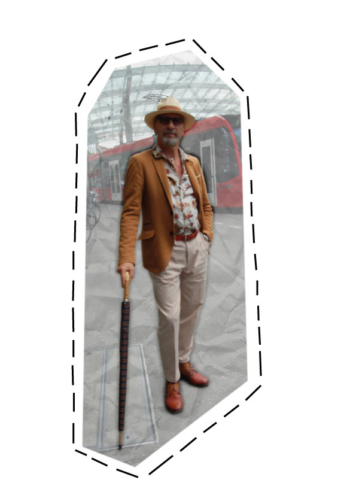
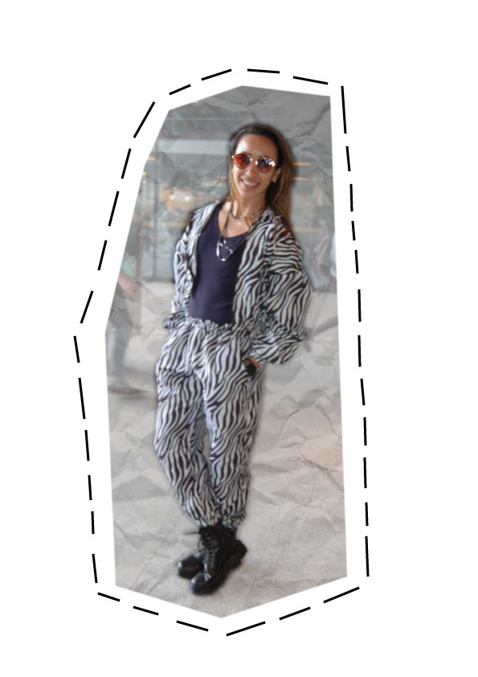
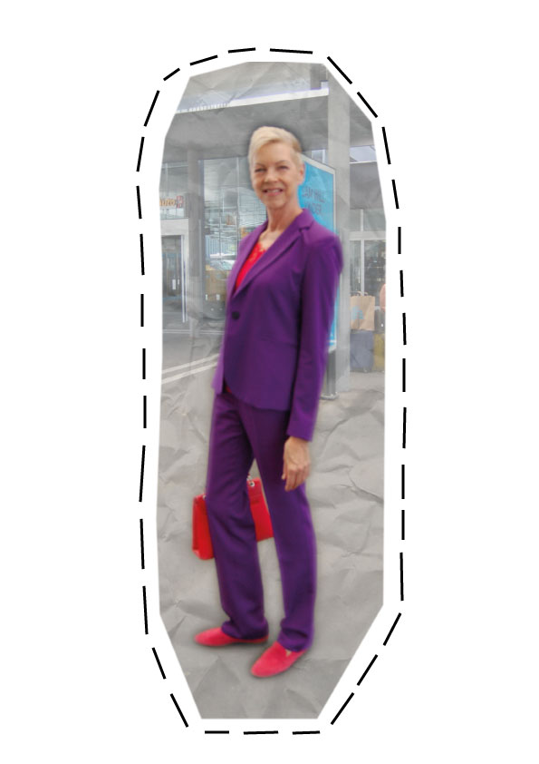

Gemütlich in einem Strassencafé sitzen und den Leuten zuschauen, ist etwas was viele Leute gerne tun. Aber woher kommt diese Faszination für andere Persönlichkeiten?
Für mich sind es die Outfits, die die Menschen tragen. Seit über zehn Jahren arbeite ich in der Modebranche und erkunde laufend die neusten Modetrends und wie diese im Alltag umgesetzt werden.
Es war schon immer mein Traum über Mode zu berichten, daher ist mein Blog für alle, die ebenfalls gerne vom Strassencafé anderen Leuten zuschauen und natürlich auch jene, die das Gefühl haben, die Mode oft nicht zu verstehen.
Diese Welt ist auch nur sehr schwer zu verstehen und nicht jeder beherrscht ihre Sprache. Wenn Sie möchten, helfe ich Ihnen dabei diese bunte Welt etwas besser kennen zu lernen.
Ich habe mir als erstes die Hauptstadt der Schweiz vorgenommen. Bern wird oft auch als "die Turnschuhstadt" bezeichnet, demnach steht die Stadt einen sehr sportlichen und einfachen Kleidungsstil. Berner gelten als langsam und unkompliziert. Wer schon mal unter den Lauben der Innenstadt flaniert ist, dem ist vielleicht der Charme und die Gemütlichkeit der Berner auch aufgefallen. Mir jedenfalls erging es so bei den Aufnahmen zu meinen Streetstyles. Es haben sich alle immer sehr gerne Zeit genommen.
In Bern begenen einem tasächlich nur wenig Leute im Businessanzug, die Leute sind vorwiegend Casual gekleidet, dennoch sind sie aber sehr Trendbewusst. So habe ich in den letzten vier Monaten fünf spannende Styles gefunden, die ich hier gerne vorstellen werde.
Diese beiden Herren sind auf den ersten Blick sehr Casual gekleidet. Mir sind speziell die Oberteile in der Farbe Beige an ihnen aufgefallen. Hemden und Shirts in diesem Erdton gelten eher als heikel, da diese Farbe der Gesichtsfarbe ähnlich ist und somit viele Typen blass erscheinen lassen kann. Den Beiden steht die Frabe jedoch, dank ihren dunklen Haaren und ihrem braunen Teint, sehr gut. Diese Outfits funktionieren auch deshalb, weil nicht mehr viele andere Farbtöne ins Spiel gebracht wurden. Die dunklen Skinnyjeans eignen sich hier perfekt als Kontrast. Wichtig ist auch, das man bei solchen Styles versucht die spezielle Farbe mindestens einmal im Outfit zu wiederholen, wie hier mit den Schuhen, das ergibt eine einheitliche Harmonie.
Dieser Streetstyle fällt gerade besonders auf. Viele junge Leute tragen heute wider weite Hosen oder auch Schlaghosen. Alle Eltern kennen diese Styles schon, denn egal ob es die 70er, 80er oder 90er Jahre waren, in denen sie jung waren, die Epochen werden zurzeit alle wieder kopiert, denn der Retrolook ist gerade total angesagt. Bei genauerer Betrachtung fallen einem dann aber doch ein paar Einzelheiten auf, die neu Interpretiert wurden. Die Hose hier im Marlene Dietrich Stil, war früher eine eher klassissche und elegante Hose, heute wird dieser Schnitt mit Sneakers auf der Strasse getragen und dieses Model hat sogar einen Schlitz bekommen damit die Sneakers besser zur Geltung kommen. Dies bringt mich gleich zum nächsten aktuellen Thema, den Snakers. Nach dem wir uns in den letzten Jahren mit dem Ugly-Sneaker Trend angefreundet haben, hat sich der möglichst klobige Turnschuh nun ganz im Trendbewusstsein der Jugend von Heute etabliert. Dabei spielt jedoch die Marke eine entscheidende Rolle, denn dieser Schuh darf nicht billig sein.
Bauchfrei ist ebenfalls wieder ein Trend, der bei den Eltern schon immer für Kopfschütteln gesorgt hat. Es wird jedoch nicht wie in den 2000er Jahren von der Hüfte an Bauchfrei getragen, sondern lediglich einen Spalt in der Taille frei gelassen. Die Hosen und Jupes für Frauen sind oft sehr hoch in die Taille geschnitten und werden am Besten wie hier mit einem kurzen Crop-Top kombiniert. Diese neue Taillenbetonung hat den Effekt, selbst die kürzesten Beine etwas zu verlängern.
Dieser Herr verkörpert sehr lässig den Dandy-Style, wobei eigentlich nur zwei Accessoires zu dieser Interpretation führen. Es sind vorallem der Hut und der Regenschirm, die das Outfit in den angesagten Retrostyle verwandeln. Bei genauerem Hinschauen, fallen einem noch weitere Details am Outfit auf, die sicherlich nicht zufällig ausgewählt sind. Schuhe und Gurt sind besispielsweise passend auf einander abgestimmt. Trotz verschiedener Brauntöne wirkt alles stimmig kombiniert, denn das Hemd mit dem Blumenmuster wiederholt jeden Farbton und lässt so die Kombination stimmig wirken. Die Chinohose mit den Bundfalten ist definitiv ein weiteres Statment zum Style, sowie das passende Einstecktuch im Blazer. Die Sonnenbrille ist das Accessoir, welches dem Ganzen dann noch die nötige Coolness gibt und rundet das Outfit perfekt ab.
Dieses Outfit fällt einem einfach auf. Womit wir bei den Animalprints gelandet wären. Diese sind ein Tribut 80er Jahre und kamen seither eigentlich nie richtig aus der Mode. Bei Animalprints muss man jedoch besonders aufpassen, denn diese sind nicht ganz einfach zu Kombinieren. Eine wichtige Moderegel lautet ja, dass man nie mehr als drei Farben am Körper tragen sollte und genau diese gilt besonders beim Kombinieren von Leo- oder Zebralooks. Sonst kann das Outfit schnell mal kitschig wirken. Bei Schmuck und Accessoirs, die man dazu tragen möchte ist das anders, hier darf man gerne mal etwas dicker auftragen. Zu Leoprints gehört vorallem Goldschmuck und zum Zebra der Silberschmuck. Diese Dame hat demnach alles richtig gemacht, ihr Zebrazweiteiler im Joggingstyle kombiniert sie mit Schwarz und mehreren Ketten um den Hals. Die dicken Stiefel, die sie trägt, gehören übrigens zu den Newcomern des Winters und lösen die Sneakers in der kälteren Jahreszeit als Trendsetter ab. Springerstiefel und der Klassiker von Doc Martens sind da besonders angesagt.
Auf die Idee, diesen beiden Farbtöne zusammen zu kombinieren, kommen nicht viele. Funktioniert aber eigentlich ganz gut, finde ich. Manchmal darf es in der Modewelt auch mal die sogenannte "Faust aufs Auge" sein. Aber Achtung, dieser Style funktioniert nur weil wir auf Anhieb erkennen, das er so gewollt ist, denn die passenden Accessoirs in der selben Farbe wie das rote Top, wurden sicherlich nicht zufälltig gewählt. Würde sie dazu grüne Schuhe und eine weisse Tasche tragen, würde das ganze viel wahlloser und unstimmiger wirken. Diese Frau signalisiert mit diesem Businessstyle nicht nur Mut und Stärke, sondern auch das gewisse Stilgefühl.
